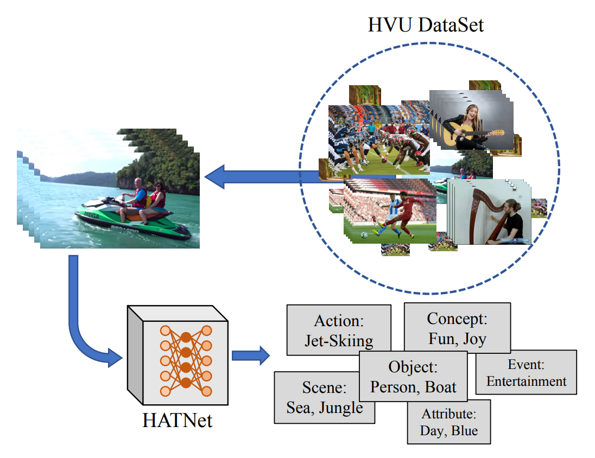
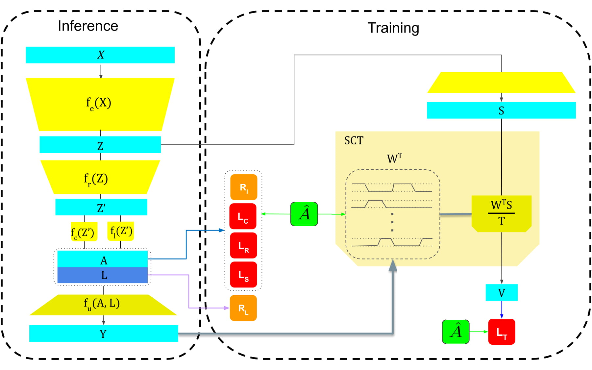
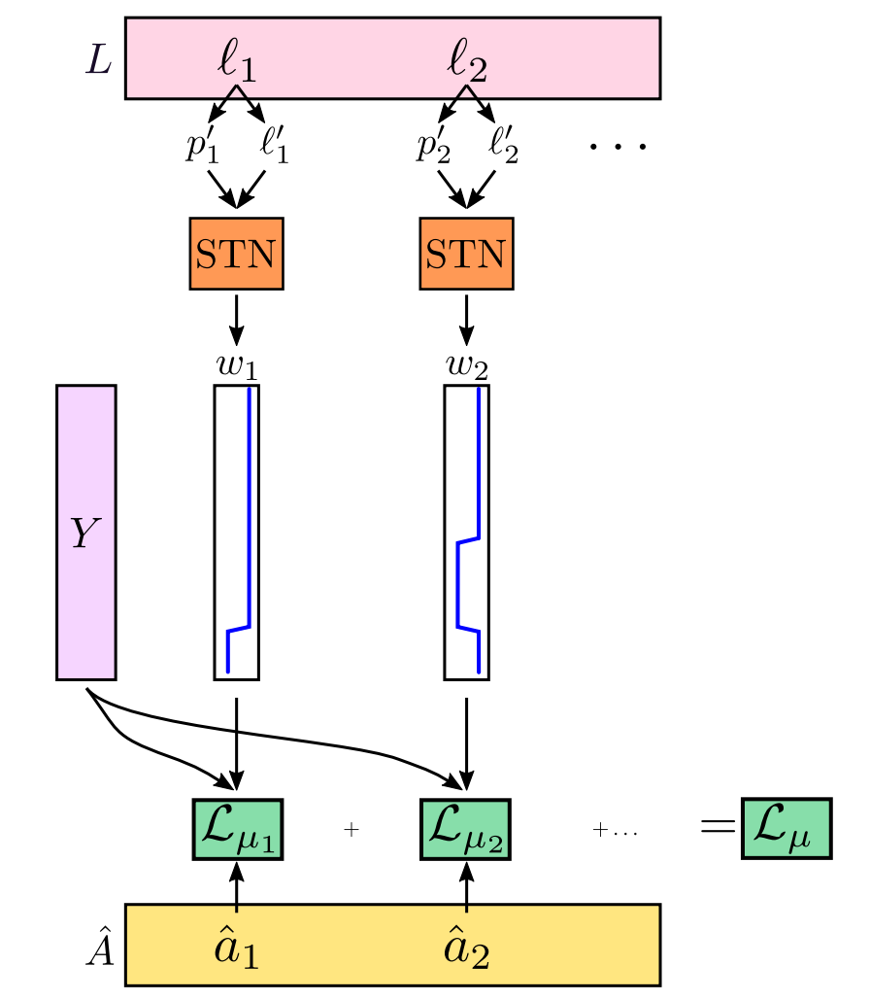
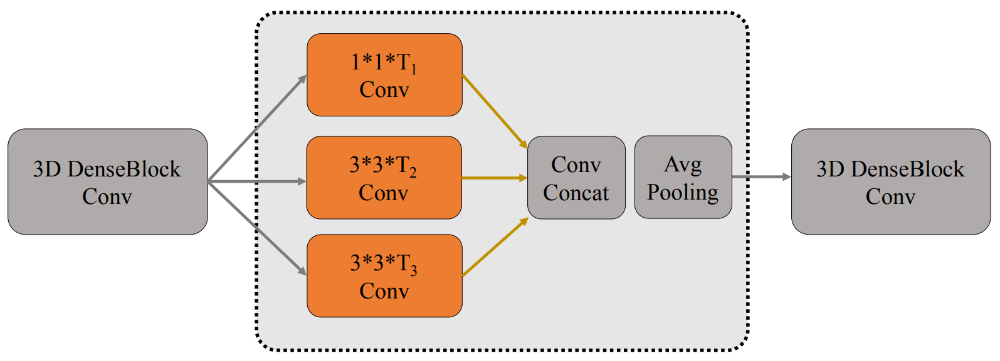
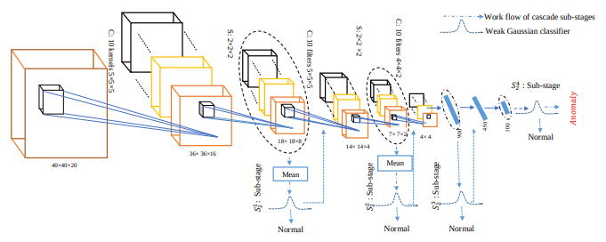

Selected Publications

Large Scale Holistic Video Understanding
2020 - ECCV Spotlight (Top ~3%)A. Diba*, M. Fayyaz*, V. Sharma*, M. Paluri, J. Gall, R. Stiefelhagen, L. Van Gool
*Equal contribution, listed in alphabetical order Paper | Data | Project Website


Weakly Supervised Action Segmentation Using Mutual Consistency
2019 - arXivY. Souri*, M. Fayyaz*, J. Gall
*Equal contribution Paper
Spatio-Temporal Channel Correlation Networks for Action Classification
2018 - ECCVA. Diba*, M. Fayyaz*, V. Sharma, M. Arzani, R. Yousefzadeh, J. Gall, L. Van Gool
*Equal contribution Paper

Temporal 3D ConvNets by Temporal Transition Layer
2018 - CVPR Workshop on Brave New Ideas in Video Understanding 2018A. Diba*, M. Fayyaz*, V. Sharma, A. Karami, M. Arzani, R. Yousefzadeh, L. Van Gool
*Equal contribution Paper

Deep-anomaly: Fully convolutional neural network for fast anomaly detection in crowded scenes
2018 - Computer Vision and Image UnderstandingM. Sabokro*, M. Fayyaz*, M. Fathy, Z. Moayed, R. Klette
*Equal contribution Paper


Deep-cascade: Cascading 3D Deep Neural Networks for Fast Anomaly Detection and Localization in Crowded Scenes
2017 - IEEE Transactions on Image ProcessingM. Sabokro, M. Fayyaz, M. Fathy, R. Klette
Paper